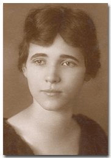
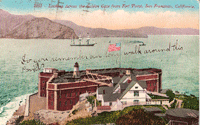
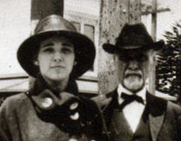
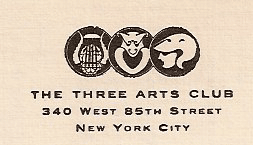
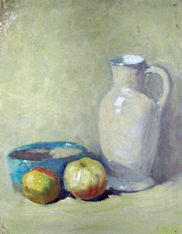

|
 |
|
|
|
Agnes Jean Cox was born in Bakersfield, California on February 21, 1891. She the daughter of Cary Stith Cox and Jessie Marie Helm. She is the grandaughter of a sheep farmer William Helm. Agnes married Murray Archibald Campbell on June 23, 1917 and had four children. |
||
| Important Facts | ||
| February 21, 1891 | Born in Bakersfield, California. She is the daughter of Jessie Marie Helm and Cary Stith Cox. Source: California Death Index, 1940-1997. |
 |
| Agnes went deaf shortly after birth, possibly from heat stroke. Source: Conversation with Joan Gloor. | ||
| July 27, 1909 | Her sister Frances sent Agnes a post card of San Francisco, California - Golden Gate and Fort Point. Source: Post Card sent by Frances Cox. | |
| February 6, 1912 | Anges sent her sister Frances another post card of the Golden Gate and Fort Point in San Francisco. Source: Post Card sent by A. J. C. | |
| 1914 | Anges met her grandfather, William Helm, in San Francisco. Source: Family picture of Anges Cox and William Helm. |
 |
| Agnes went to New York to attend an Arts school called The Three Arts Club, to get a degree as an interior decorator. | ||
| January 1, 1917 | Agnes went with a group of other girls to Murray Campbel's farm for a New Years weekend party. They drew boots dancing and wrote "at last at last!" beside her name. Murray proposed to her that night, New Years Eve 1917. | |
| February 1, 1917 | Murray wrote Agnes J. Cox a letter to the Three Arts Club on 340 W. 85th Street, NYC. Source: Letter from Murray Campbell to Miss Agnes Jean Cox. |  The Three Arts Club letterhead |
| June 23, 1917 | She married Murray Archibald Campbell in Fresno, California. | |
| September 16, 1917 | Agnes's father wrote her a letter congratulating her about her recent marriage and that he has half interest in two hotels in Tucson Arizona. Source: Letter from Cary Stith Cox to Miss Agnes Jean Cox. | |
| February 17, 1918 | John Hamilton Campbell was born in New York City. |
Agnes Jean Cox at Locust Hall Farm |
| 1918 | While living on Locust Hill Farm, Agnes caught the flu during the flu epidemic of 1918. | |
| 1918 | They moved to Tucson, Arizona to help Murray recover. Tucson had clean air and the sun and Agnes' father, Cary S. Cox, had a Hotel there. Murray worked as a bookkeeper for a Bank. | |
| January 9, 1920 | US Federal Census lists Murran [Murray] Campbell (38), Agnes J. (29), John HC (2), boarders at the Hotel Lewis in Tucson, Arizona. Source: Tucson Ward 2, Pima, Arizona; Roll: T625_50; Page: 7A; Enumeration District: 103; Image: 1054. | |
| August 8, 1920 | Peter Campbell was born. Lived for only 5 months. Dr. Campbell wrote his son on August 20, 1920 letting Murray know how sorry he was to hear the news. Source: Letter from Archibald M. Campbell. |  Painting by Agnes Jean Cox |
| 192? | Douglas Campbell was born and died in childbirth in Fresno, California. He was delivered by her uncle, Dr. Lawrence Maupin. Source: Joan Campbell recollections. | |
| They moved to Berkeley because they had many deaf friends there. The California school for the deaf, dumb, and blind was there at the time. | ||
| Aug. 30, 1924 | Mr. Archibald Campbell wrote Jean a letter to the Sane Hospital in San Francisco, asking her to send more information regarding their finances and sedning them a check for $300 to help cover expenses. Source: Letter to Jean Campbell from Archibald M. Campbell. | |
| Jan. 4, 1925 | Agnes's mother, Jessie M. Cox, wrote Agnes a letter and asked her not to start any business that would take her away from the home. She also said that she made 22 pints of orange marmalade and will send some to her and Francis. Source: Letter from Jessie M. Cox to Agnes J. Campbell. | |
| Jan. 7 - Aug. 4, 1926 | In January, Helen Campbell wrote Agnes a letter to thank her for the Christmas present she sent to Helen's daughter and to update her on family news. In February, Agne's mother, Jessie Helm Cox, wrote Agnes and Murray a letter about John's recent illness and how she felt that only Dr. Lawrence Maupin should be involved in any operation or treatment. She said "Dr. Maupin is the ony one I have confidence in and as I said before John means enough to me that I want him to have the best there is to be had." In August, Jessie wrote her grandson, John a lettrer from Fresno, California. She talked about how much she missed him and his trip. Source: Letters from Helen L. Campbell and Jessie M. Cox to Agnes and Murray Campbell. | |
| June 6 - Dec. 7, 1927 | Jean's sister Frances wrote two letters from 1248 R. St. Fresno. In June, she talked about getting ready for her daughter Nancy's birthday party and stories about close friends and associates. In December, Frances talked about how busy her life was and how she was happy to have a "colored girl" do some of the work around the house. Source: Letters from Frances Whitt. | |
| January 5, 1928 | Jean received a letter from Helen Campbell (Murray's sister-in-law), who was living at 410 N. Columbus Ave., Mount Vernon , New York. In the letter Helen thanked Jean for sending rose silk pillow. She went on to say: "I wish you could see how pretty it looks and how perfectly the color matches the upholstery." Source: Letter from Helen Campbell to Jean Campbell. | |
| February 8, 1928 | Jean received a letter from Cary S. Cox, who was living at 1248 R. St. Fresno, CA. In the letter Cary talked about sending her a box of grapefruit and a box of lemons. Source: Letter from Cary S. Cox to his daughter Jean Campbell. | |
| March 8, 1928 | Her mother, Jessie M. Cox wrote Agnes a letter from Coronado, California. She had not heard for them in a month and wanted to make sure that no one was ill. Source: Letter from Agnes's mother. | |
| May 28, 1928 | Her sister, Frances Whitt, wrote Agnes a letter from Fresno. The letter talked about not hearing from her in a while and news about aunts and uncles. Source: Letter from Mrs. Frances M. Cox-Whitt. | |
| June 5 - 11, 1928 | Jean's mother, Jessie M. Cox wrote her a letter June 5th, saying she was sorry to hear that Jean was ill and asked her to see the family doctor before going on her auto trip. Jean wrote Murray a letter June from the New Sargent Hotel in Portland Oregon. She was on vacation, traveling with her friends and their son John to Portland, Vancouver and Seattle. She also sent Murray post cards from her trip. One post card had a picture of Mt. Shasta. In July, Jean's Aunt, Francis (Fannie) Jayne Helm-Walrond from Fresno, wrote her a letter talking about a recent trip to Shaver Lake and how her two sons, Frank and Henry met her and took her home. Source: Letters from Jean Campbell to her husband Murray. | |
| March 30, 1929 | Muriel Joan Campbell was born at the Alta Bates Community Hospital in Berkeley, California. Source: California Birth Index, 1905-1995. |
Muriel Joan Campbell |
| April 2, 1930 | US Federal Census lists Murray Campbell (48), Agnes J. (39), John HC (11), and Muriel J. (1), living in Berkeley, Alameda, California. Source: 1930; Census Place: Berkeley, Alameda, California; Roll: 110; Page: 1A; Enumeration District: 289; Image: 1118.0. | |
| October 29, 1930 | Her father, Cary S. Cox, recieved a patent for a Pressure Fruit Grinder. Source: Munn & Co. Patent Attorney's, Patent No. 1,780,067. | |
| August 6, 1931 | At age 49, her husband Murray, died in Berkeley of pneumonia, although he was very debilitated by tuberculosis. | |
| Abt. 1939-1956 | Agnes married Thaddeus Stevens Ormes in Modesto, California, who was a Berkeley policeman. They were married for 17 years. Mr. Omes had beautiful Dobermen Pincher dogs. He was one of the first Berkeley cops who used one on his police beat. Source: Conversation with Joan Campbell. | |
| 1938-1941 | Agnes owned the Bay Span Auto Court motel at 1701 E. Shore Hwy., Richmond, California. Her niece, Jessie C Hall, worked at the motel. Because of the war and ship building in the area, the rooms were always full. Source: Jessie C Hall. | |
| 1941-1948 | Owned a chicken ranch with horses in Walnut Creek. This is where Joan kept a horse and learned to ride. Source: Conversation with Joan Campbell. | |
| 1951-1956 | Agnes bought a Seaside Motel, which later went bankrupt. Source: Conversation with Joan Campbell. | |
| 1957-1961 | Agnes married Clarence Zirker in Merced who was a sign painter. Source: Conversation with Joan Campbell. | |
| 1959 | Mrs. Campbell bought the Mariposa Auto Court on a foreclosure in Mariposa, California, which today is owned and operated by her daughter and grandson. | |
| 1961 | Married William (Bill) Mallman in Las Vegas. Source: Conversation with Joan Campbell. | |
| 1966 | Married Harry Ducan. They divorced after about 1 year. Source: Conversation with Joan Campbell. | |
| 1970's | Agnes Campbell went to Japan on a tour group in the early 70s and brought back some cultured pearls, unstrung, so that she would not have to pay duty on them. Her plan was to have the pearls made into three necklaces and perhaps earrings. She was going to have a necklace for herself, one for her daughter Joan, and one for her granddaughter Lita. Her plans were never carried out. After Agnes died, her duaghter, Joan had the pearls made into a three-strand necklace with "an apple green jade clasp" and matching earrings. In December 2006, Joan turned the three-strand necklace into three separate necklaces to give to her two daughters, Lita and Louise, and daughter-in-law Mia, as keepsakes from her mother and herself. | |
| August 19, 1976 | Agnes Jean Campbell died at the Alta Bates Community Hospital in Berkeley, California. She was living at the El Cerrito apartments. She died of Kidney failure. Source: Conversation with Joan Campbell and the California Death Index, 1940-1997; Social Security #555-505-126. | |
| August 20, 1976 | She was cremated at the Rolling Hills Memorial Park. Murray and Agnes's ashes were sprinkled by a bridge in Yosemite National Park. Source: Conversation with Joan Campbell. |


Last updated: August 11, 2026